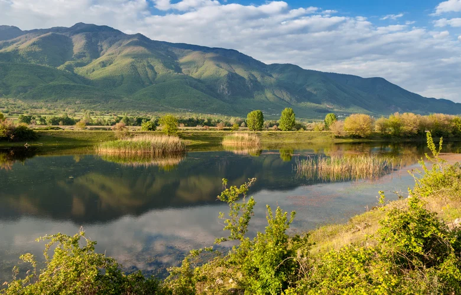

Welcome to our website dedicated to Lake Kerkini in Greece.
We are passionate about conservation and sustainable tourism, and we created this platform to raise awareness about the importance of protecting Greece's natural and cultural heritage.
Join us on our journey as we explore the diverse landscapes, ecosystems, and cultural treasures in Lake Kerkini.
